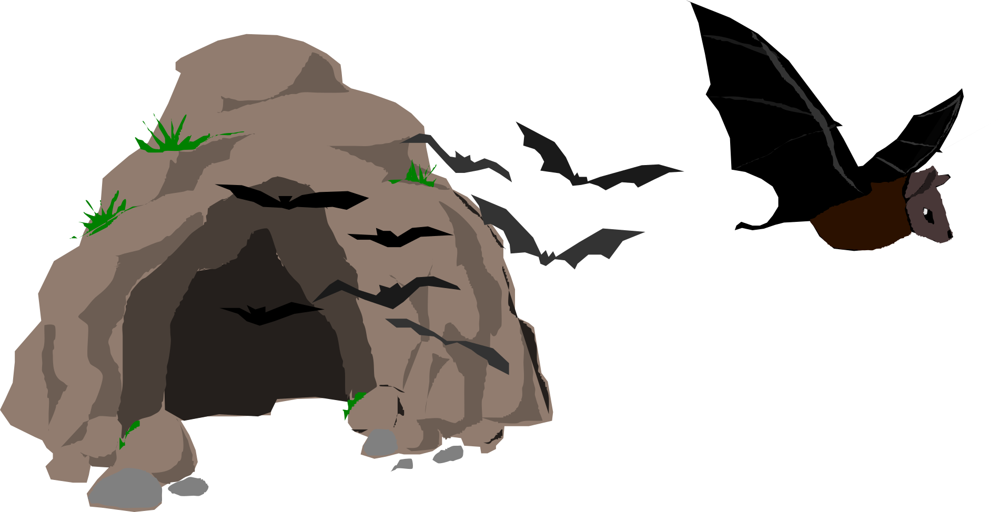

From the Bat Cave – Integrative Disease Ecology Research for Undergraduates
Sep 18, 2024
3 min read
Image credit: S.J. Anthony
We have extended our application deadline to November 15, 2024. We are seeking self-motivated, curious, and collaborative students for an exciting 7-week paid National Science Foundation (NSF) research experience investigating environment-host-virome dynamics within wild Egyptian fruit bats (Rousettus aegyptiacus). This interactive learning and research opportunity introduces undergraduates to integrative disease research, including fieldwork in Puerto Rico! Students will receive guided mentorship, attend daily group meetings, and get hands-on training in fieldwork, data analysis, coding, and science communication!
Become a member of the Bat Cave!
Are you ready to sink your teeth into cutting-edge research?
Do you have an interest in disease ecology?
Would you like to learn more about bats, ecology, and viromes?
Are you looking for an opportunity to conduct field research?
Join the BatCave for Summer 2025 and emerge a scientist!

About the Project!
In nature, encounters between humans and wildlife correlate with greater viral burdens in wildlife and therefore with higher risk of new viral pathogens spilling over into human populations. Yet, the factors contributing to this risk remain poorly understood, especially among highly mobile, but tightly packed populations of animals, such as cave-dwelling bats. Using the Egyptian fruit bat as a study system, this project seeks to understand how factors such as access to food, overall animal health, and responses to immune challenges influence each other in the wild to control the degree of viral infection in populations experiencing variable exposure to humans. This project funded by the National Science Foundation (NSF) applies highly integrative approaches to illuminate the fundamental biology of disease risk and to enhance the capacity to predict risks of viral spillover from bats to other wildlife or to humans. From the Bat Cave is an educational module for undergraduates that offers an interactive learning and research-based introduction to integrative disease research using project data. Because Nigeria is a long way off, we introduce students to field ecology in Puerto Rico. Find out more about the course details and objectives below!
Grant Awards
Collaborative Research: Integrated mechanisms of environment-host-virome interactions (2217295) to Texas Tech, (2217296) to SBU and VIDO/USask, and (2217297) to UC-Davis.
Dive into real data from wild Egyptian fruit bats in Nigeria
Master tools in ecology, genomics, and virology
Work in diverse teams to tackle integrative research questions
Learn to communicate science like a pro
Participate in fieldwork in the forests of Puerto Rico!
🌟 Who we’re looking for:
Eligible participants must be US citizens, US nationals, or US permanent residents
Juniors, Seniors, or people who have graduated within the last year (May 2024) in biology or related fields at any US institution
Curious minds eager to learn across disciplines
Team players ready to collaborate
Undergraduates from all backgrounds - we especially encourage applications from underrepresented minorities in STEM
💪 What you’ll gain:
Hands-on research and field experience in disease ecology
Training in field techniques to study bats in their natural habitat
Mentorship from expert scientists in ecology, genomics, and virology
Skills in data analysis, coding, and scientific communication
A supportive peer network across three universities
Preparation for graduate school or science careers
🏫 Where:
Online program connecting students from across the US
Field training in Puerto Rico
📅 When:
May 19 - July 3, 2025
Puerto Rico travel dates: June 11 - June 21, 2025
Available in Spring 2025 for training, vaccination schedules, fit tests etc.
💰 Compensation: Stipend for this full-time course of 7 weeks is $5,000. Travel to Puerto Rico is funded separately.
Don’t let this opportunity fly by! Apply now to join the Bat Cave and be part of groundbreaking research while exploring the fascinating world of bats!
Application deadline: November 15, 2024. Apply here
 Image credit: S.J. Anthony
Image credit: S.J. Anthony